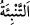

şekilde bilmeyi gerektirir.
Onların amellerinin ortaya dökülmesi “
(bildirmek)” diye ifâde edilmiştir. Çünkü
ikisi arasında benzerlik vardır. Çünkü ikisi de bilgi sâhibi olmaya sebep olur. Bu durum
onların yaptıkları kötü amellerin durumundan câhil ve kötü âkıbetinden gâfil olduklarını
îkaz etmek içindir. Çünkü yaratılış ve imkân âlemindeki kesretin/çokluğun hükümleri ve
tabîî-hayvânî mizaçların izleri onların yaratılışında gâlib olmuştur.
“Allah, her şeyi hakkıyla bilendir.” Her ne kadar münâfıklar amellerini gözlerden
saklamaya ve gizlemeye çalışsalar da ne yerde ne de gökte hiçbir şey Allah’a gizli
kalmaz.
Açık ve gizli olan her şeyi yaratan Allah Teâlâ
Cihanda gizli ve âşikâr olanı nasıl bilemez?
et-Te’vîlâtü’n-Necmiyye’de der ki: “Bilmiş olun ki,” dünya ve âhiret nimetlerinden
“göklerde ve yerde ne varsa Allah’ındır.” Onlardan bir şeye bağlanan kişiyi Allah
huzûrundan uzaklaştırır ve başkasına bağlılığı ölçüsünde onu cezâlandırır. “O, sizin ne
yolda olduğunuzu iyi bilir. İnsanlar O’nun huzûruna” başka şeylere bağlanma
zincirleri ile “döndürüldükleri gün” iyilikleri iyilikle mükâfatlandırma ve kötülükleri
de kötülükle cezâlandırma talebinde bulundukları zaman “yapmış olduklarını onlara
hemen bildirir. Allah, her şeyi hakkıyla bilendir.” yâni iyilikleri mükâfatlandırma ve
kötülükleri cezâlandırma ile ilgili her şeyi bilir. Yine O, onların yaptıklarını küçük
büyük bütün iyilik ve kötülükleri bilir.”
Bilesin ki dünya ve âhiret nimetlerinden herhangi birine bağlanmak, Allah Teâlâ’nın
ehline haramdır. Evet, ehlüllah âhireti, âhir olduğu için severler. Âhir ise Allah
Teâlâ’dır. Hakîkat ehlinden birisi der ki: “Seni Mevlân’dan ne alıkoyuyorsa dünyan
odur.”
Şu halde akıllıya gereken, mâsivâya bağlılık iplerini kesip atmak, zât ve sıfatların
tecerrüdü sırrına sarılmak, kendi durumunu düşünmek, cezâ ve mükâfat günü gelmeden
kendini hesâba çekmektir. Çünkü bu hayâtın sonu ölümdür. Dünyada kalış devamlı ve
sürekli değildir. Bir hadiste: “İnsanların ‘Size ne mutlu!’, dedikleri bir topluluk için
zaman mutlaka kötü bir gün gizlemektedir.” buyrulmuştur.
Şâir der ki:
Geceler bir kimseye iyilik etmez
Etse de iyilikten sonra kötülük eder.
Diğer bir şâir de şöyle der:
Günler güzel iken sen de onlar hakkında güzel düşündün
Kaderin getireceği kötülükten korkmadın